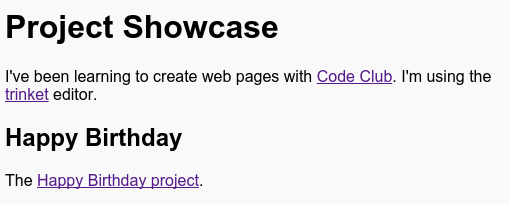
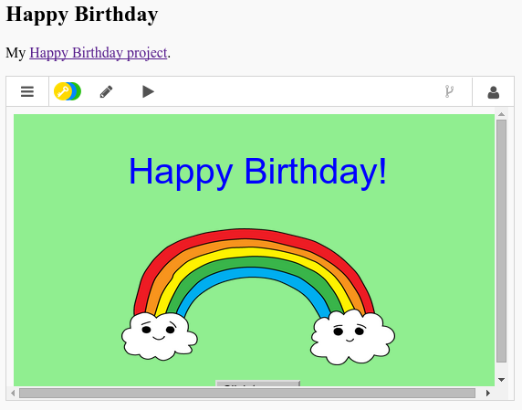

Якщо у вас є збережені проекти на Trinket, Ви можете додати їх до портфоліо, зробивши на них посилання.
Завдання для виконання
Чи зберегли ви посилання на проект "З Днем народження"? Якщо так, то відкрийте її в іншому браузері або вікні. В інакшому випадку, відкрийте завершену чернетку-зразок: https://trinket.io/embed/html/e996dc0380
Щоб скопіювати посилання на проект "З Днем народження", натисніть на кнопку "Share"(Поділитись) в меню над чернеткою та виберіть "Link"(Посилання):
screenshot
Виберіть "Only show code or output" ("Показати код чи результат", дозволитm користувачам перехід між ними)" та скопіюйте посилання до чернетки.
screenshot
Поверніться до своєї чернетки з портфоліо та додайте <h2> заголовок і посилання на проект "З Днем народження".
screenshot
Перевірте свою веб-сторінку, вона виглядатиме приблизно так:

screenshot
Натисніть посилання "З Днем народження", щоб перевірити, чи ппосилання працює.
Збережіть свій проект
Завдання: Створіть список усіх ваших проектів
Додайте інші проекти HTML & та CSS, які ви вже створили в Code Club. Використовуйте <h2> заголовки, щоб підписати кожен проект.
Якщо у вас немає посилань на проекти, які ви вже створили, то можете використовувати зразки проектів Code Club:
Ми можемо зробити так, щоб ці проекти було видно відразу в нашому портфоліо.
Завдання для виконання
Знову натисніть на кнопку "Share"(Поділитись), але цього разу виберіть "Emabed"(Вбудувати). Виберіть "Only show code or output"(Показати код чи результат) та скопіюйте згенерований код.
screenshot
Trinket створив певний HTML для вас, який потрібно включити на вашу веб-сторінку. Тут використовується тег <iframe>, який вставляє контент з інших сайтів на вашу сторінку.
Тепер вставте цей код до свого портфоліо:
screenshot
Перейдіть до портфоліо, щоб перевірити чи проект вклався в сторінку.

screenshot
Якщо вбудований проект завелекий, можете зменшити висоту (height) на